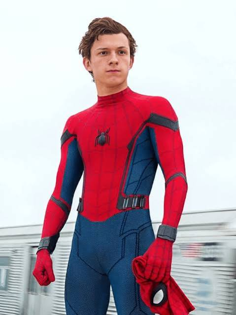

Spider man Tobey Maguire
.jpg)
Spider-Man (2002) is a landmark superhero film directed by Sam Raimi and starring Tobey Maguire as Peter
Parker, Willem Dafoe as Norman Osborn (Green Goblin), and Kirsten Dunst as Mary Jane Watson. The story
serves as the cinematic origin story for the character, following a timid teenager who gains superhuman
abilities after being bitten by a genetically engineered spider. After the tragic death of his uncle, he
takes on the mantle of Spider-Man to fight crime across New York City.
Spider-man Tom holland

Tom Holland is internationally acclaimed for portraying Peter Parker / Spider-Man across several blockbusters
in the Marvel Cinematic Universe (MCU). His tenure began with a debut in Captain America: Civil War (2016),
leading into a wildly successful solo franchise. Most recently, his fourth standalone film, Spider-Man:
Brand New Day (2026), directed by Destin Daniel Cretton, shattered box office records by passing $2.4
billion worldwide, making it one of the highest-grossing films of all time.